Matsushima
Matsushima · Miyagi
Matsushima
Highlighted on the Miyagi map.
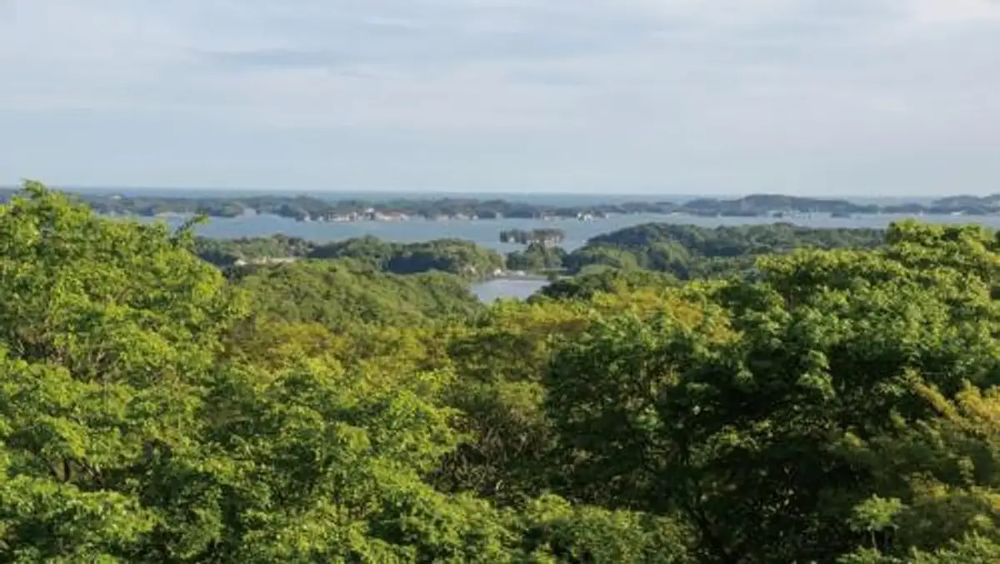
Stay
松島ホテル和楽
Matsushima Hotel Wagaku
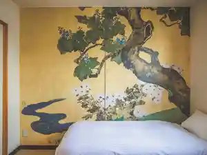
大江戸温泉物語Premium ホテル壮観
Ooedo Onsen Monogatari Premium Hotel Soukan
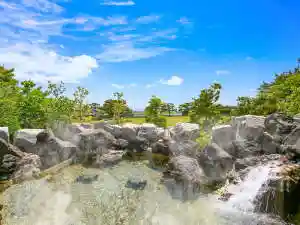
日本三景 松島 花ごころの湯 新富亭
Nippon Sankei Matsushima Hana Gokorono Yu Shintomi Tei
LEMO by matsushima
LEMO by matsushima
YOKI MATSUSHIMA
YOKI MATSUSHIMA
絹肌の湯 松島温泉 松島センチュリーホテル
Kinu Hada No Yu Matsushima Onsen Matsushima Senchuriihoteru
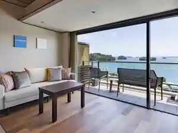
ホテル 絶景の館
Hotel Zekkei No Kan
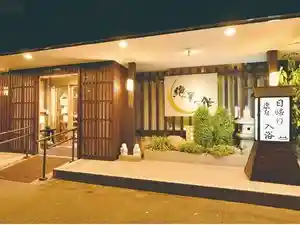
旅亭 雲静庵
Tabi Tei Kumo Sei Iori
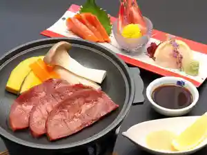
たびの邸宅BREATHTAKE松島
BREATHTAKE
ブリーズベイシーサイドリゾート松島（ＢＢＨホテルグループ）
Buriizubeishiisaidorizooto Matsushima ( B B H Hoteruguruupu )
Dining
松華堂菓子店
Shouka Dou Kashi Mise
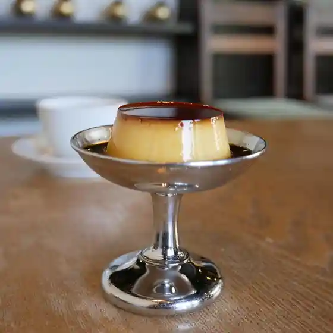
松島 一の坊
Matsushima Ichinobou
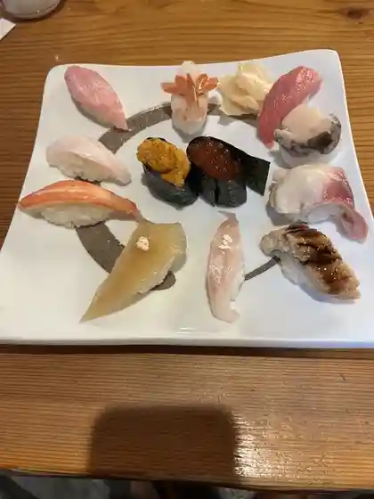
松島 寿司幸
Matsushima Sushi Sachi
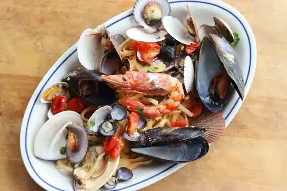
松島イタリアン トト
Matsushima Itarian Toto
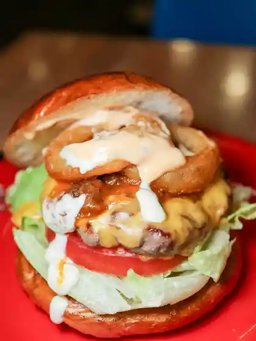
ハリーズジャンクション
Hariizujankushon
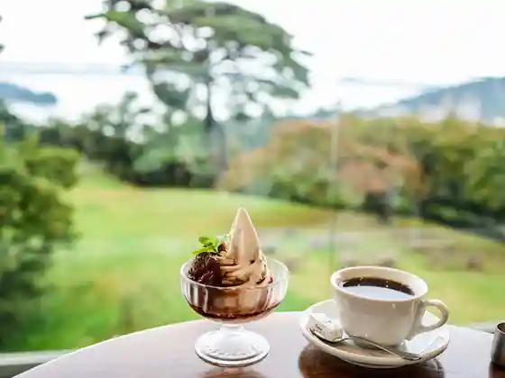
ロマン
Roman
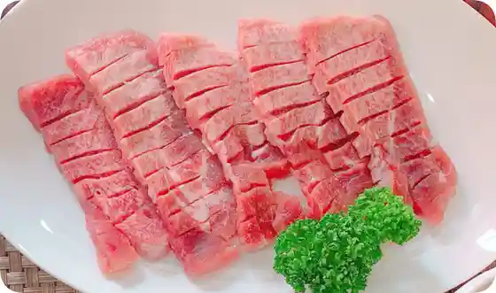
牛タンの店 赤間精肉店
Gyuutan No Mise Akama Seinikuten
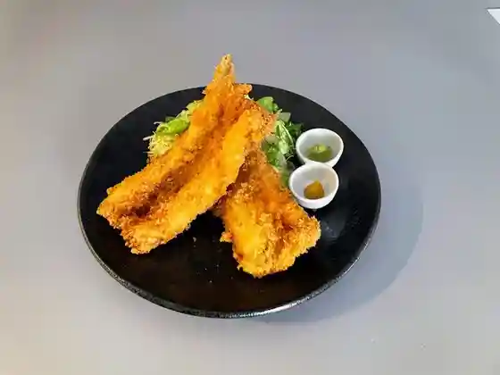
丼松島
Donburi Matsushima
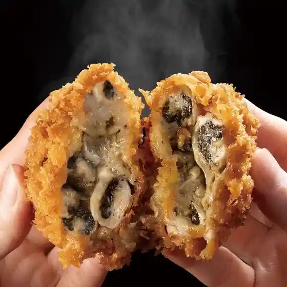
牡蠣屋フライ亭
Kaki Ya Furai Tei
松島さかな市場
Matsushima Sakana Shijou
さんとり茶屋
Santori Chaya
漁師の海鮮丼
Ryoushi No Kaisen Donburi
ぱんやあいざわ
Panyaaizawa
焼がきハウス
Yaki Gaki Hausu
松島 雪竹屋
Matsushima Yukitake Ya
かき小屋
Kaki Koya
観瀾亭
Kan Ran Tei
杉原功商店
Sugihara Kou Shouten
二八屋
Nihachi Ya
げんぞう
Genzou
洗心庵
Senshin Iori
松島 かき小屋 MATSU
MATSU
BAY OYSTER
BAY OYSTER
松島佐勘 松庵
Matsushima Sakan Shouan
旬海
Jun Umi
クロワッサン屋サクサク 本店
Kurowassan Ya Sakusaku Honten
Pizzeria Pino Isola VESTA
Pizzeria Pino Isola VESTA
たいかん亭
Taikan Tei
たからや食堂
Takaraya Shokudo
かき松島 こうは 松島海岸駅前店
Kaki Matsushima Kouha Matsushima Kaigan Ekimae Mise
きむら食堂
Kimura Shokudo
ヨシタケ食堂
Yoshitake Shokudo
丸焼きたこせんべい 松島東北本店
Maruyaki Kitakosenbei Matsushima Touhoku Honten
中華そば うちみ
Chuuka Soba Uchimi
竹雀庵
Chikujaku Iori
櫻井
Sakurai
パンセ 松島店
Panse Matsushima Mise
大観荘
Daikansou
石田家
Ishida Ie
そば処翠松庵
Soba Tokoro Suishou Iori
まぐろ茶家 松島店
Maguro Chake Matsushima Mise
日進堂 松島店
Nisshin Dou Matsushima Mise
小松館好風亭
Komatsu Kan Kou Kaze Tei
れすとらん海音
Resutoran Kaion
松島センチュリーホテル
Matsushima Senchuriihoteru
漁師直営牡蠣小屋 with 小さな釣り堀
Ryoushi Chokuei Kaki Koya With Chiisa Na Tsuri Hori
松島蒲鉾本舗 総本店
Matsushima Kamaboko Honpo Souhonten
牡蠣･海鮮食べ放題 松島おさしみ水族館
Kaki Kaki Kaisen Tabe Houdai Matsushima Osashimi Suizokukan
伊達かふぇ
Date Kafe
紅蓮屋 心月庵
Guren Ya Shingetsu Iori
Bridge33
Bridge33
ブルーベイコーヒー
Buruubeikoohii
赤間水産
Akama Suisan
南部屋
Nanbuya
松島蒲鉾本舗 門前店
Matsushima Kamaboko Honpo Monzen Mise
赤ピーマン
Aka Piiman
ＩＬＥ ＣＡＦＥ
ILE CAFE
枉駕
Ouga
松島プリン亭
Matsushima Purin Tei
阿部蒲鉾店 松島寺町店
Abe Kamaboko Mise Matsushima Teramachi Mise
ホテル 絶景の館
Hotel Zekkei No Kan
磯寿司
Iso Sushi
牛たん炭焼 利久 松島海岸駅前店
Ushi Tan Sumiyaki Toshihisa Matsushima Kaigan Ekimae Mise
牛たん炭焼 利久 松島五大堂店
Ushi Tan Sumiyaki Toshihisa Matsushima Godai Dou Mise
三全 松島寺町小路店
San Zen Matsushima Teramachi Kouji Mise
宮城県松島離宮 海の駅
Miyagiken Matsushima Rikyuu Umi No Eki
牡蠣将
Kaki Shou
旅人の海鮮酒屋
Tabibito No Kaisen Sakaya
うみねこや
Uminekoya
ふじ茂
Fuji Shigeru
青海波
Seikai Nami
仙台とんこつラーメン 一番堂 松島店
Sendai Tonkotsu Raamen Ichiban Dou Matsushima Mise
かき松島こうは 松島海岸駅前2号店
Kaki Matsushima Kouha Matsushima Kaigan Ekimae 2 Gou Mise
はせくら茶屋
Hasekura Chaya
戸田金商店
Toda Kinshou Mise
レストラン五郎八
Resutoran Gorohachi
松島チサンカントリーレストラン
Matsushima Chisankantoriiresutoran
松島庵
Matsushima Iori
リトル・リス
リトル・リス
ホテル 大松荘
Hotel Oomatsu Sou
和食 めん処 誉旨
Washoku Men Tokoro Yo Mune
潮騒
Shiosai
ベイランド
Beirando
中華料理 雄峰 ホテル大観荘
Chuukaryouri Yuuhou Hotel Daikansou
料亭雲静庵
Ryoutei Kumo Sei Iori
大江戸温泉物語Premium ホテル壮観
Ooedo Onsen Monogatari Premium Hotel Soukan
むとう屋
Mutou Ya
伊達なおみやげ堂
Date Naomiyage Dou
茶屋勘右衛門
Chaya Kan'emon
喜洲
Ki Su
KEY'S CAFE 松島離宮 海の駅店
KEY&39S CAFE
山形蕎麦の焔蔵 凪
Yamagata Soba No Honoo Kura Nagi
MATSUSHIMA SANDWICH STORE
MATSUSHIMA SANDWICH STORE
italian dining Bene
italian dining Bene
ブリーズベイ シーサイドリゾート松島
Buriizubei Shiisaidorizooto Matsushima
ZUNDA ZUNDA BAYSIDE 松島店
ZUNDA ZUNDA BAYSIDE
四季亭
Shiki Tei
パレス松洲
Paresu Shoushuu
新富亭
Shintomi Tei
松島 浪漫亭
Matsushima Rouman Tei
和らーめん なかお
Yawaraa Men Nakao
海畑
Umi Hatake
きくやべーす
Kikuyabeesu
浜焼グリル離宮
Hamayaki Guriru Rikyuu
グリル玉屋
Guriru Tamaya
クロワッサン屋サクサク 松島店
Kurowassan Ya Sakusaku Matsushima Mise
エム パントリー
Emu Pantorii
中里飲食店
Nakazato Inshokuten
LYNCH
LYNCH
芭蕉の湯
Bashou No Yu
風まかせ
Kaze Makase
びすとろアバロン
Bisutoro Abaron
お食事処 白帆
O Shokuji Tokoro Shiraho
和格子
Wa Koushi
はこだて屋台ラーメン松島店
Hakodate Yatai Raamen Matsushima Mise
来宝店
Rai Takara Mise
松島串や
Matsushima Kushi Ya
四季海鮮料理亭
Shiki Kaisen Ryouri Tei
SHOBIAN CAFE
SHOBIAN CAFE
和食処 天正
Washoku Tokoro Tenshou
仁王丸売店
Niou Maru Baiten
cafe curam
cafe curam
和食処 楽楽
Washoku Tokoro Raku Raku
風のマルシェ
Kaze No Marushie
牡蠣将 支店
Kaki Shou Shiten
Casa MIL HOJAS
Casa MIL HOJAS
第三仁王丸 売店
Daisan Niou Maru Baiten
タリーズコーヒー ハーバーテラス松島離宮店
Tariizukoohii Haabaaterasu Matsushima Rikyuu Mise
旬味 かきの里
Jun Aji Kakino Sato
浅野商店
Asano Shouten
真壁豆富店
Makabe Toufu Mise
松島蒲鉾本舗 松島海岸駅店
Matsushima Kamaboko Honpo Matsushima Kaigan Eki Mise
居酒屋 六文銭
Izakaya Roku Bun Sen
Leixoes
Leixoes
松月食堂
Matsuzuki Shokudo
蜂谷商店
Hachiya Shouten
BIRD MAN
BIRD MAN
伊達精進懐石 雲外
Date Shoujin Kaiseki Ungai
こなん 松島店
Konan Matsushima Mise
みさきチェーン
Misaki Cheen
zizo+ベーカリー
Zizo+ Beekarii
おみやげ処 松島海岸
Omiyage Tokoro Matsushima Kaigan
カフェ&バー ニット
Kafe & Baa Nitto
おばんざいTSUMUGI 松島
TSUMUGI
Luna's Green Pancake
Luna&39s Green Pancake
ずんだ茶寮 松島海岸駅店
Zunda Charyou Matsushima Kaigan Eki Mise
ございんや 旬 牡蛎庵
Gozainya Jun Kaki Iori
高栄水産
Taka Sakae Suisan
松島観光物産館
Matsushima Kankou Bussan Kan
伊藤時尾商店
Itou Toki O Shouten
キャビン
Kyabin
SPICE CURRY AO
SPICE CURRY AO
御菓子処 勝新堂
O Kashi Tokoro Katsushin Dou
松島地区漁業組合 直売所
Matsushima Chiku Gyogyoukumiai Chokubai Tokoro
松島地区漁業組合 生かき直売所
Matsushima Chiku Gyogyoukumiai Ika Ki Chokubai Tokoro
丸文松島汽船株式会社 かき鍋クルーズ
Maru Bun Matsushima Kisen Kabushikigaisha Kaki Nabe Kuruuzu
本田整骨院
Honda Seikotsu In
ロ・ロール
ロ・ロール
寿司幸 本店
Sushi Sachi Honten
磯崎漁業組合 生かき直売所
Isozaki Gyogyoukumiai Ika Ki Chokubai Tokoro
ラウンジバー汐風
Raunjibaa Shiokaze
あいはら商店
Aihara Shouten
山根商店
Yamane Shouten
梅茶屋 松島店
Umecha Ya Matsushima Mise
串焼八州
Kushiyaki Hasshuu
ミュージアムカフェ
Myuujiamukafe
割烹 中央
Kappou Chuuou
松島パーク食堂
Matsushima Paaku Shokudo
松の実
Matsu No Mi
小松館 好風亭 売店
Komatsu Kan Kou Kaze Tei Baiten
ぷーんひる
Puunhiru
ねまわりの野菜畑
Nemawarino Yasai Hatake
奥州牛たん本舗 松島店
Oushuu Ushi Tan Honpo Matsushima Mise
cafe 2438
cafe 2438
まつしま
Matsushima
菓子工房 松田屋
Kashi Koubou Matsuda Ya
京屋
Kyouya
陸奥物産
Michinoku Bussan
A&COOP 松島店
A&COOP
白松がモナカ本舗 松島店
Shiramatsu Ga Monaka Honpo Matsushima Mise
コットンストーリー
Kottonsutoorii
Uchi 松島ゲストハウス
Uchi Matsushima Gesutohausu
かきせんべぃ 天海
Kakisenbei Amagai
セブンイレブン 宮城松島店
Sebun'irebun Miyagi Matsushima Mise
カネハチ橋本かまぼこ店 松島店
Kanehachi Hashimoto Kamaboko Mise Matsushima Mise
牡蠣ノ屋
Kaki No Ya
みちのく伊達政宗歴史館 おみやげ処
Michinoku Datemasamune Rekishikan Omiyage Tokoro
燻製工房 おが太郎 陸奥物産店内直営店
Kunsei Koubou Oga Tarou Michinoku Bussan Tennai Chokueiten
クロワッサン屋サクサク カフェ松島
Kurowassan Ya Sakusaku Kafe Matsushima
霊泉亭
Reisen Tei
鈴憲商店
Suzu Nori Shouten
ラ・セレース
ラ・セレース
レストランチサン 松島店
Resutoranchisan Matsushima Mise
cafe&goods わんWAN
cafe&goods WAN
MATSUSHIMA DONUT STAND
MATSUSHIMA DONUT STAND
クラフトCafe てとて
Kurafuto Cafe Tetote
ファミリーマート 松島高城店
Famiriimaato Matsushima Takagi Mise
松島サマサマ カフェ&シーフード
Matsushima Samasama Kafe & Shiifuudo
喜洲自宅
Ki Su Jitaku
丸文松島汽船あおば
Maru Bun Matsushima Kisen Aoba
スナック葵
Sunakku Aoi
松乃
Matsuno
居酒屋まき
Izakaya Maki
Restaurant Umine
Restaurant Umine
Kakigoya
Kakigoya
Shokado Kashiten
Shokado Kashiten
Ryoshi no Kaisendon
Ryoshi no Kaisendon
Don Matsushima
Don Matsushima
Taikanso
Taikanso
Donjiki Chaya
Donjiki Chaya
Gyutan No Mise Akama Seinikuten
Gyutan No Mise Akama Seinikuten
Pensee Matsushima
Pensee Matsushima
Nambuya Dininig
Nambuya Dininig
Harry s Junction
Harry s Junction
Tairiyo Shyokudokoro
Tairiyo Shyokudokoro
Sanzen Matsushima Monzen
Sanzen Matsushima Monzen
Gyutan Yumiyaki Rikyu Matsushimagodaido
Gyutan Yumiyaki Rikyu Matsushimagodaido
Bay Land
Bay Land
Date Cafe
Date Cafe
Osakana Project
Osakana Project
Wa Ramen Nakao
Wa Ramen Nakao
Kinshodo Shiten Shokudobu
Kinshodo Shiten Shokudobu
Sobadokoro Suishoan
Sobadokoro Suishoan
Shunkai
Shunkai
Shoginan
Shoginan
Ramen Kobo Ajishimaya Matsushima
Ramen Kobo Ajishimaya Matsushima
Ulu Matsushima
Ulu Matsushima
Ajidokoro Sokanzan
Ajidokoro Sokanzan
Daikoku Sushi
Daikoku Sushi
Utsumi Soba
Utsumi Soba
Toda Gold
Toda Gold
La Ceres
La Ceres
Tapioka Factory Kohaku Matsushima
Tapioka Factory Kohaku Matsushima
Takesuzuan
Takesuzuan
Shiraho
Shiraho
Kisyu
Kisyu
Cafe bar Champion
Cafe bar Champion
Shogetsu Shokudo
Shogetsu Shokudo
European Style Restaurant la Mer
European Style Restaurant la Mer
Kinsyodo Main Store
Kinsyodo Main Store
Snack Aoi
Snack Aoi
Cafe goods WAN
Cafe goods WAN
Izakaya Tatchan
Izakaya Tatchan
Iyashi No Yakata Oshokujidokoro
Iyashi No Yakata Oshokujidokoro
Seafood Restaurant No 28
Seafood Restaurant No 28
Cafe goods WAN
Cafe goods WAN
Shiki Kaisen Ryoritei
Shiki Kaisen Ryoritei
Restaurant Chisan Matsushima
Restaurant Chisan Matsushima
Udon Soba Shirahagian
Udon Soba Shirahagian
Chinese Cuisineoga
Chinese Cuisineoga
Neo Taiyoken
Neo Taiyoken
Sushi Dokoro Ono
Sushi Dokoro Ono
Tokoroya Dininig
Tokoroya Dininig
Kagetsu
Kagetsu
Kimura Shokudo
Kimura Shokudo
Izakaya Nishizawa
Izakaya Nishizawa
Sushi Ryusei
Sushi Ryusei
Oshu Gyutan Dining
Oshu Gyutan Dining
Hasunohane Cafe
Hasunohane Cafe
Yuho
Yuho
Izakaya Hatsu
Izakaya Hatsu
Abe Pastry
Abe Pastry
Tanno Confectionery
Tanno Confectionery
Marutora Daigo
Marutora Daigo
Juan Soba Tempura Restaurant
Juan Soba Tempura Restaurant
SHoginan
SHoginan
Craft Cafe Tetote
Craft Cafe Tetote
Unagi Sakurai
Unagi Sakurai
Onsen
Matsushima Taikanso Baths
Hot-spring baths with Matsushima Bay views at Taikanso
Matsushima Century Hotel Onsen
Natural Matsushima hot-spring baths overlooking the bay
Shop
Matsushima Fish Market
Seafood market behind the Date Masamune History Museum
Nihachiya Local Products
Local specialty goods shop in the temple-town streets
Sights
Entsu-in Temple
Historic temple gardens beside Zuigan-ji
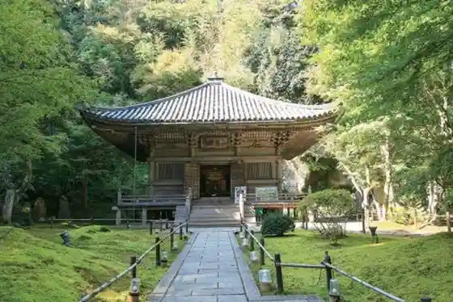
Michinoku Date Masamune History Museum
History museum on Date Masamune near Matsushima coast
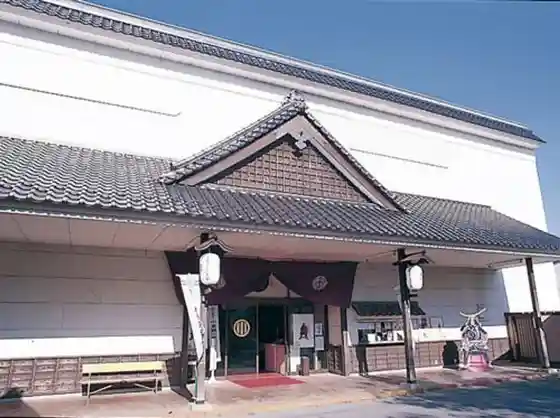
Fukuura Island
Bridge-linked island walk with pine and bay views
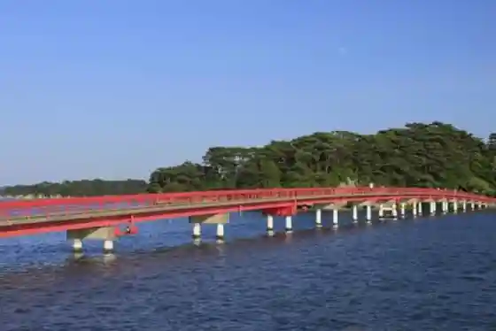
Reikan Tomiyama Viewpoint
One of Matsushima’s classic four scenic viewpoints
Zuigan-ji Treasure Hall
Treasure hall at the major Zen temple of Matsushima
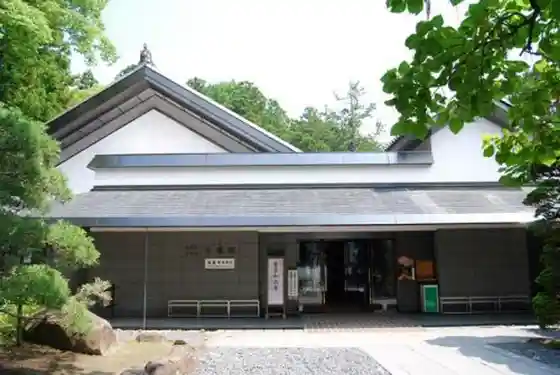
Matsushima Yacht Harbor
Public yacht harbor on Namiuchihama
Abe Kamaboko Matsushima Temple Town Shop
Sasakamaboko maker shop in the temple-town streets
Matsushima Prefectural Natural Park
Prefectural natural park covering the Matsushima islandscape
Kanrantei & Matsushima Museum
Historic tea house and museum overlooking the bay
Fujita Kyohei Glass Museum
Glass art museum affiliated with Ichinobo
Matsushima Retro Museum
Small museum of local retro memorabilia
Yukan Ogitani Viewpoint
Classic Matsushima viewpoint above the bay
The Museum MATSUSHIMA
Contemporary exhibition space near Fugendou